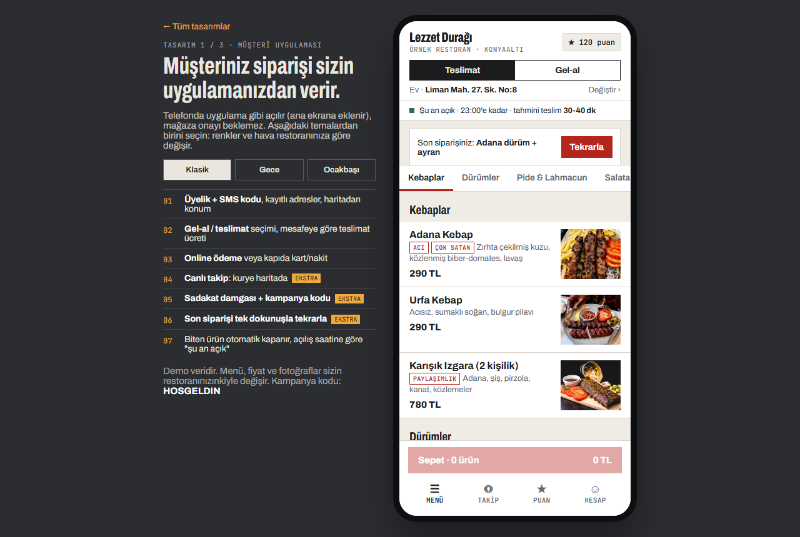
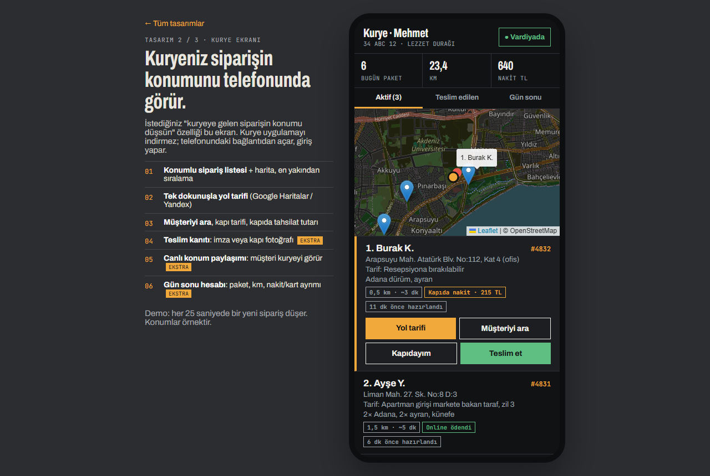
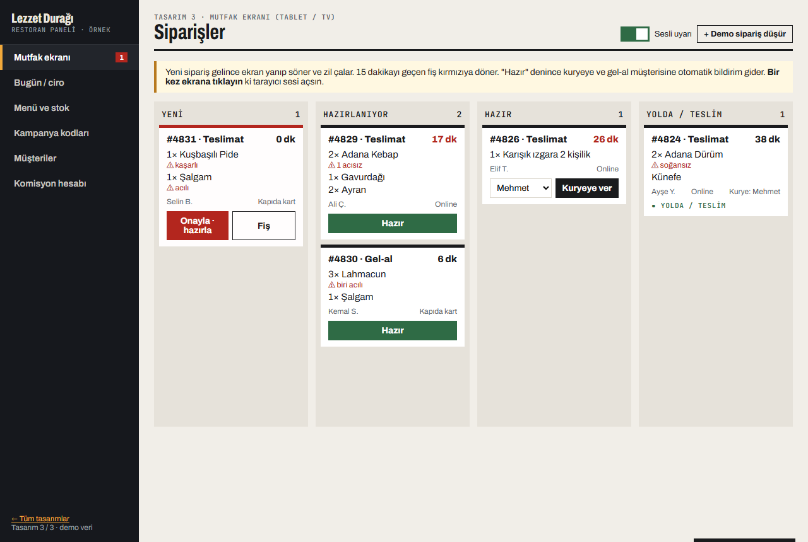

Üç ekran, tek sistem
Müşteri, kurye ve mutfak aynı anda aynı siparişi görür. Bir yerde "hazır" denince diğer ikisine anında düşer.

1 · Müşteri uygulaması
Telefonda uygulama gibi açılır, ana ekrana eklenir. 3 tema: Klasik, Gece, Ocakbaşı.
- Üyelik (SMS kodu), kayıtlı adresler, haritada iğne
- Gel-al / teslimat, mesafeye göre ücret, min. sepet
- Online ödeme, kapıda kart/nakit, ileri saatli sipariş
- Canlı takip: kurye haritada
- Sadakat damgası, puan, kampanya kodu
- "Son siparişi tekrarla", ürün ekstraları, mutfağa not

2 · Kurye ekranı
Siparişin konumu kuryenin telefonuna düşer. En yakın paket en üstte.
- Harita + liste, mesafe ve tahmini süre
- Tek dokunuşla Google Haritalar yol tarifi
- Kapı tarifi, müşteriyi ara, "kapıdayım" bildirimi
- Kapıda tahsilat tutarı (nakit / kart)
- Teslim kanıtı: imza veya kapı fotoğrafı
- Gün sonu: paket, km, kasaya teslim edilecek nakit

3 · Mutfak ekranı + panel
Mutfaktaki tablet ya da TV'de siparişler; ofiste ciro ve kampanyalar.
- Sesli uyarı, gecikme rengi, tek tuşla fiş yazdırma
- Kurye atama, "hazır" bildirimi
- Menü ve stok: biten ürünü tek tuşla kapat
- Kampanya kodları + otomatik kampanyalar
- Ciro, en çok satan, saatlik yoğunluk
- Komisyon hesabı: ayda ne kadar cebinizde kalır?
İstediğiniz ve bizim eklediğimiz
İlanınızdaki her madde var. Kırmızı etiketli olanları siz istemediniz; restoranın günlük işini kolaylaştırdığı için biz ekledik.
| Özellik | Nerede |
|---|---|
| Kuryeye gelen siparişin konumu düşsün | Kurye ekranı: harita + yol tarifi |
| Online ödeme aktif olsun | Müşteri uygulaması: kart (3D Secure), kapıda kart, nakit |
| Üyelik girişi, adres ekleme, kayıtlı adres | Müşteri uygulaması: SMS kodu, birden çok adres, kurye tarifi |
| Gel-al ve teslimat seçeneği | Müşteri uygulaması + mutfak ekranı |
| Canlı sipariş takibi (kurye haritada) EKSTRA | Müşteri uygulaması · Takip sekmesi |
| Sadakat damgası, puan, arkadaşını getir EKSTRA | Müşteri uygulaması · Puan sekmesi |
| Sesli mutfak ekranı, gecikme uyarısı, fiş EKSTRA | Mutfak ekranı |
| Teslim kanıtı (imza / fotoğraf) EKSTRA | Kurye ekranı |
| Kurye gün sonu nakit hesabı EKSTRA | Kurye ekranı · Gün sonu |
| Biten ürünü tek tuşla kapatma, anlık fiyat EKSTRA | Panel · Menü ve stok |
| Otomatik kampanyalar (doğum günü, "sizi özledik", yağmurlu gün) EKSTRA | Panel · Kampanya kodları |
| Kendi müşteri listeniz + SMS kampanyası (İYS uyumlu) EKSTRA | Panel · Müşteriler |
| Komisyon tasarruf hesabı EKSTRA | Panel · Komisyon hesabı |
Bu uygulama kendini ne zaman öder?
Örnek: platformdan ayda 600 sipariş, ortalama sepet 280 TL, komisyon %25. Siparişlerin yalnızca %40'ı kendi uygulamanıza geçse:
Kendi rakamlarınızla: Panel → Komisyon hesabı
Paketler
Tek seferlik kurulum ücreti. Sunucu, güvenlik güncellemeleri ve destek aylık 490 TL. Fiyatlar KDV hariç, 9 Ekim 2026'ya kadar geçerlidir.
- Müşteri uygulaması (web + ana ekrana eklenebilir)
- Üyelik, kayıtlı adres, gel-al / teslimat
- Online ödeme (sanal POS bağlantısı)
- Kurye ekranı: konum + yol tarifi
- Yönetim paneli: sipariş, menü, fiyat
- Başlangıç paketindeki her şey
- Canlı sipariş takibi (kurye haritada)
- Sesli mutfak ekranı + fiş yazdırma
- Sadakat damgası, puan, kampanya kodları
- Teslim kanıtı, kurye gün sonu
- Ciro raporları, müşteri listesi
- Tam sistemdeki her şey
- App Store ve Google Play uygulaması
- Bildirim (push) ile kampanya
- Otomatik kampanyalar + SMS paketi
- Birden çok şube desteği
Nasıl ilerliyoruz?
Restoranınızın adını yazın, bu demoyu kendi menünüzle hazırlayalım.
Alim Hoşlar · Dijitabela · 0501 945 21 84 · info@dijitabela.com